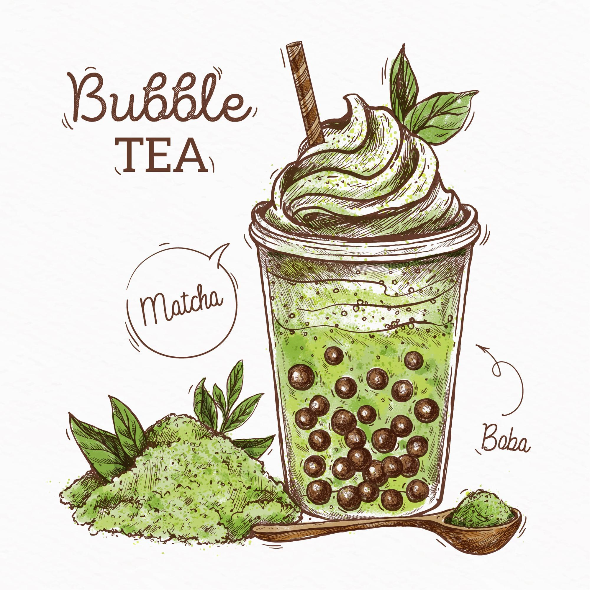
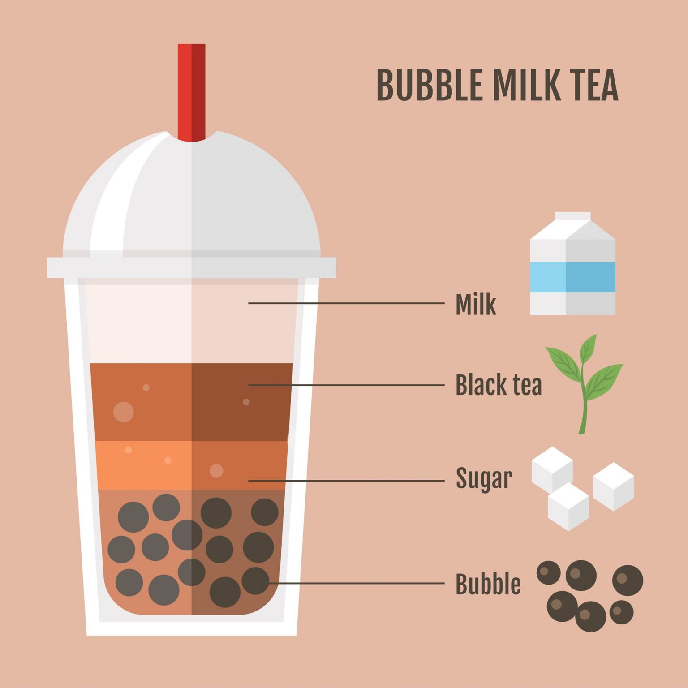

Boba, also known as bubble tea, is a Taiwanese tea-based drink that has gained popularity worldwide. It typically consists of tea mixed with milk or fruit flavors, and chewy tapioca pearls or fruit jelly. The drink is often served cold with a wide straw to accommodate the pearls. Boba tea comes in various flavors and can be customized to suit individual tastes, making it a fun and versatile beverage.
History of Boba
Boba tea originated in Taiwan in the 1980s. It was created by mixing sweetened tapioca pearls with tea and milk. The drink quickly became popular in Taiwan and spread to other parts of Asia and eventually to the rest of the world. Today, boba tea shops can be found in many countries, offering a wide variety of flavors and toppings.

Types of Boba
There are many different types of boba tea, each with its own unique flavor and texture. Some popular types include classic milk tea, fruit tea, matcha tea, and taro tea. Toppings can also vary, with options such as tapioca pearls, fruit jelly, popping boba, and pudding. This variety allows for endless combinations and customization.
How to Make Boba
Making boba tea at home is simple and fun. Start by brewing your favorite tea and letting it cool. Cook the tapioca pearls according to the package instructions. Mix the tea with milk or fruit juice, add sweetener if desired, and then add the cooked tapioca pearls. Serve over ice with a wide straw and enjoy your homemade boba tea!
